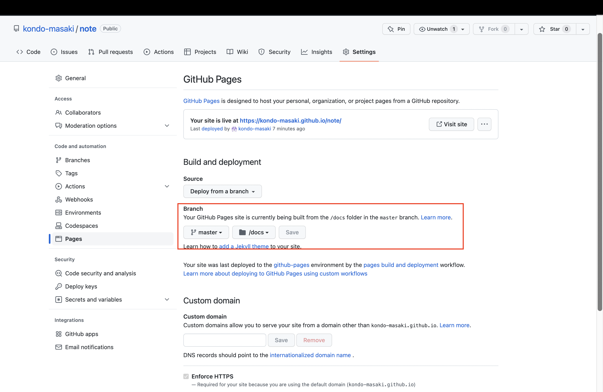

ReadMe
Published with HonKit
ReadMe
note
Honkit
GitBook後継のHonkitを使ってビルドしたHTMLファイルをGitHub Pagesでホスティング
下記を実行して/docs配下にHTMLを生成
npx honkit serve . docs
リモートリポジトリにPUSH
添付画像赤枠でバインドするパスをmasterブランチの/docsに変更

results matching "
"
No results matching "
"